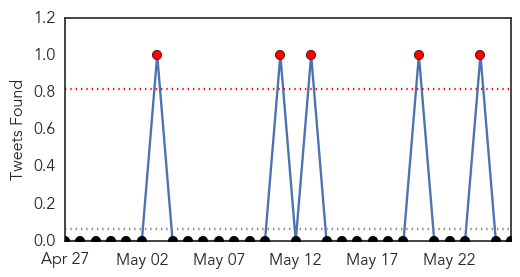
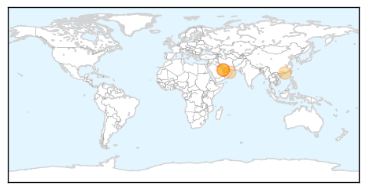
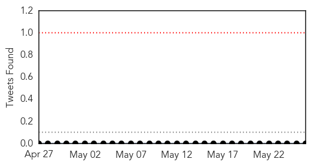
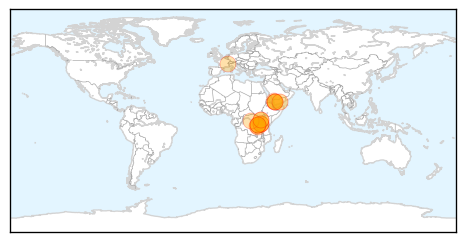

MERS
30-Day Web Trend
5 alerts, 2 warnings

30-Day Twitter Trend
5 alerts, 0 warnings

Article Locations
Article Confidences

Top Articles:
- 0.998
- First Cases of MERS-CoV in Republic of Korea are Reported to WHO
- 0.998
- DH closely monitors five additional MERS cases
- 0.990
- MERS virus continues to spread in South Korea
- 0.988
- Korea: Additional MERS case reported, brings total to 4
- 0.977
- WHO is Notified of Six Cases of MERS-CoV in Qatar, Saudi Arabia and United Arab Emirates
Top Tweets:
- 0.627
- AFD Blog `@WHO MERS-CoV Update – Saudi Arabia' http://t.co/3m21lk3Obz
- 0.531
- AFD Blog `Korea: Confirmation Of 5th Positive MERS Case' MERS-CoV http://t.co/U3ubGv6rQJ
- 0.501
- AFD Blog `Saudi MOH: 1 New MERS Case In Taif' MERS-CoV http://t.co/7YzUJIkDM5
Cholera
30-Day Web Trend
10 alerts, 1 warnings
30-Day Twitter Trend
0 alerts, 0 warnings

Article Locations
Article Confidences

Top Articles:
- 0.994
- Cholera containment measures stall death rate in Tanzania refugee camp
- 0.993
- Cholera crisis in Tanzania improving despite high transmission risk - United Republic of Tanzania
- 0.992
- Tanzania cholera epidemic improving but ignificant challenges still remain UN
- 0.987
- Cholera crisis in Tanzania improving despite high transmission risk - WHO
- 0.984
- Tanzania: Cholera outbreak takes a positive turn - United Republic of Tanzania
- 0.980
- 'Significant Challenges’ in Tanzania Cholera Outbreak
- 0.975
- Cholera containment measures stall death rate in Tanzania refugee camp
- 0.966
- Cholera containment measures stall death rate in Tanzania refugee camp
- 0.964
- Cholera outbreak among Burundi refugees in Tanzania slowing
- 0.957
- Tanzania cholera epidemic deaths among Burundian refugees and local population halted, new cases down sharply
- 0.947
- Cholera outbreak among Burundi refugees in Tanzania slowing: UN
- 0.906
- United Republic of Tanzania: Cholera crisis in Tanzania improving despite high transmission risk
- 0.796
- Two-thirds of people in conflict-hit Yemen without clean water
- 0.728
- Two thirds of Yemen without clean water, as outbreak of disease looms: Oxfam
- 0.613
- War Leaves Two-Thirds of Yemen without Water Access: Oxfam
- 0.583
- Threat of disease as 16 million Yemenis without clean water: Oxfam
- 0.530
- War leaves 16 million Yemenis without clean water: Oxfam
- 0.528
- ‘16 million without clean water in Yemen’
- 0.511
- 16 mn in Yemen have no access to drinking water: Oxfam
- 0.511
- 16 mn in Yemen have no access to drinking water: Oxfam
- 0.508
- 16 mn in Yemen have no access to drinking water
Top Tweets:
-
No tweets found for May 26, 2015